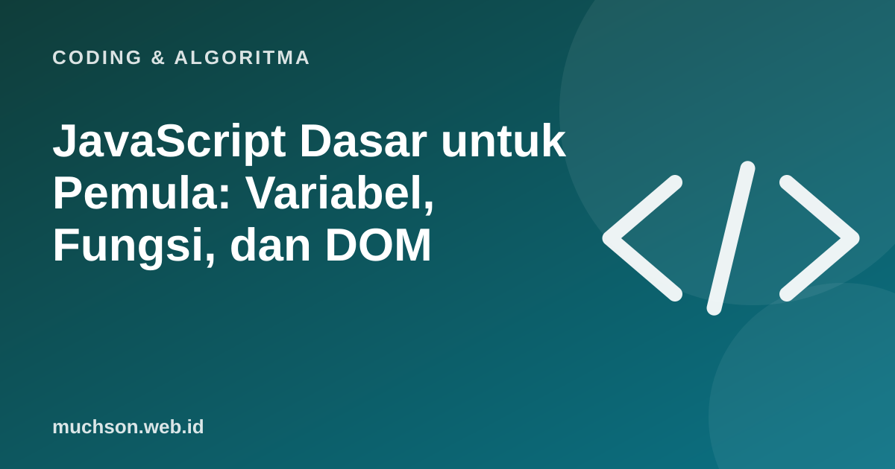

Beranda › Artikel › Coding & Algoritma
Coding & AlgoritmaJavaScript Dasar untuk Pemula: Variabel, Fungsi, dan DOM
JavaScript adalah bahasa yang membuat halaman web hidup: tombol yang bereaksi, formulir yang memeriksa isian, dan konten yang berubah tanpa memuat ulang halaman. Kabar baiknya, Anda bisa mulai belajar sekarang juga tanpa memasang apa pun, cukup dengan browser.

Tempat mencoba: konsol browser
Buka halaman apa saja di Chrome atau Edge, tekan F12 (atau klik kanan → Inspect), lalu pilih tab Console. Ketik 2 + 3 dan tekan Enter. Selamat, Anda baru menjalankan JavaScript.
Variabel dan tipe data
let nama = "Dina"; // teks (string)
let umur = 12; // angka (number)
let sudahLulus = false; // benar/salah (boolean)
const kota = "Malang"; // const: tidak bisa diganti
umur = umur + 1;
console.log(nama + " berumur " + umur);
console.log(`${nama} tinggal di ${kota}`); // template literalPakai const secara bawaan, dan let hanya bila nilainya memang akan berubah. Hindari var pada kode baru karena perilakunya lebih membingungkan.
Kondisi
const nilai = 78;
if (nilai >= 85) {
console.log("A");
} else if (nilai >= 70) {
console.log("B");
} else {
console.log("Perlu remedial");
}
// === membandingkan nilai DAN tipe
console.log(5 == "5"); // true (hindari)
console.log(5 === "5"); // false (gunakan ini)Perulangan
for (let i = 1; i <= 5; i++) {
console.log("Langkah ke-" + i);
}
const buah = ["apel", "jeruk", "mangga"];
for (const b of buah) {
console.log(b.toUpperCase());
}Fungsi
function hitungDiskon(harga, persen) {
return harga - harga * persen / 100;
}
// fungsi panah (arrow function)
const formatRupiah = (n) => "Rp" + n.toLocaleString("id-ID");
console.log(formatRupiah(hitungDiskon(150000, 20))); // Rp120.000Array dan objek
const produk = [
{ nama: "Kaos", harga: 80000, stok: 12 },
{ nama: "Topi", harga: 50000, stok: 0 },
{ nama: "Tas", harga: 200000, stok: 4 },
];
const tersedia = produk.filter(p => p.stok > 0);
const namaSaja = tersedia.map(p => p.nama);
const total = produk.reduce((jml, p) => jml + p.harga * p.stok, 0);
console.log(namaSaja); // ["Kaos", "Tas"]
console.log(total); // 1760000Tiga metode filter, map, dan reduce sangat sering dipakai dalam pekerjaan nyata. Kuasai ketiganya dan Anda akan membaca banyak kode modern dengan lebih mudah.
DOM: mengubah halaman web
DOM (Document Object Model) adalah representasi halaman web yang bisa dibaca dan diubah JavaScript. Contoh kecil: tombol yang menghitung klik.
<!-- index.html -->
<button id="tombol">Klik aku</button>
<p id="hasil">Belum diklik</p>
<script>
let jumlah = 0;
const tombol = document.querySelector("#tombol");
const hasil = document.querySelector("#hasil");
tombol.addEventListener("click", () => {
jumlah++;
hasil.textContent = `Diklik ${jumlah} kali`;
});
</script>Polanya selalu sama: pilih elemen (querySelector), dengarkan kejadian (addEventListener), lalu ubah sesuatu (textContent, classList, style). Pola ini adalah inti interaktivitas web.